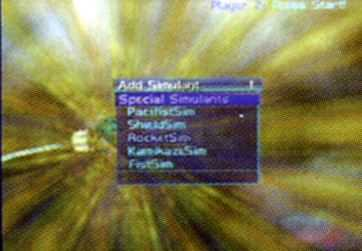

.
| Perfect
Dark Version Beta : Simulants
|
| Voici
2 Photos nous montrant certains Noms de Simulants changés par
la suite. Evidemment, celà concerne la Version US, et devrait
en interesser peu d'entre vous... |


Il y avait
à l'origine 12 Simulants portant ces noms en Avril (Source EGM).
NormalSim
PacifistSim
RevengeSim
VendettaSim
CowardSim
PredatorSim
KamikazeSim
ShieldSim
FistSim
TurtleSim
RocketSim
CheetaSim
En Mai, la
Liste change quelque peu (Source Nintendo Power)
PeaceSim
ShieldSim
RocketSim
KaziSim
FistSim
PredatorSim
CowardSim
JusticeSim
VendettaSim
CheetahSim
TurtleSim
RevengeSim
Et voici comment les Noms ont changés.
| PacifistSim
devient PeaceSim
KamikazeSim devient KazeSim
PredatorSim devient PreySim
VendettaSim devient FeudSim
CheetaSim devient SpeedSim
RevengeSim devient VengeSim
JusticeSim devient JudgeSim
|